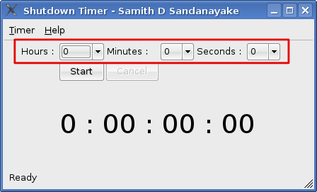
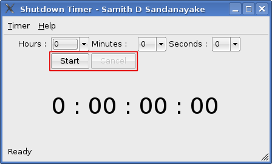
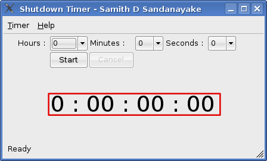

Shutdown timer is an application to shutdown your linux based home
computer by a timer. It uses "halt" command for shutingdown your
computer.
So to use this you must run this as root. When it ask password type your password.
CAUTION :Do not use this on Servers, Public
computers, Office, or even on your fathers computer.
To install first extract the files, then type "sudo
./setup_shtimer" then it will do the magick for you.
The power of QT is so good. This uses Qt as the basic.
The Timer

Use the combo boxes to set the time.
The Control

Use pushbuttons to Start and Cancel the timer.
The Display

This shows the remaining time for your shutdown.
Online
This is the website( a blog ) to give you the current information about this appliction. All about the updates will be here.
© Samith D Sandanayake,
Werellahena,
Horana,
Sri Lanka.
samithdisal@gmail.com
+94722120770
+94342263141